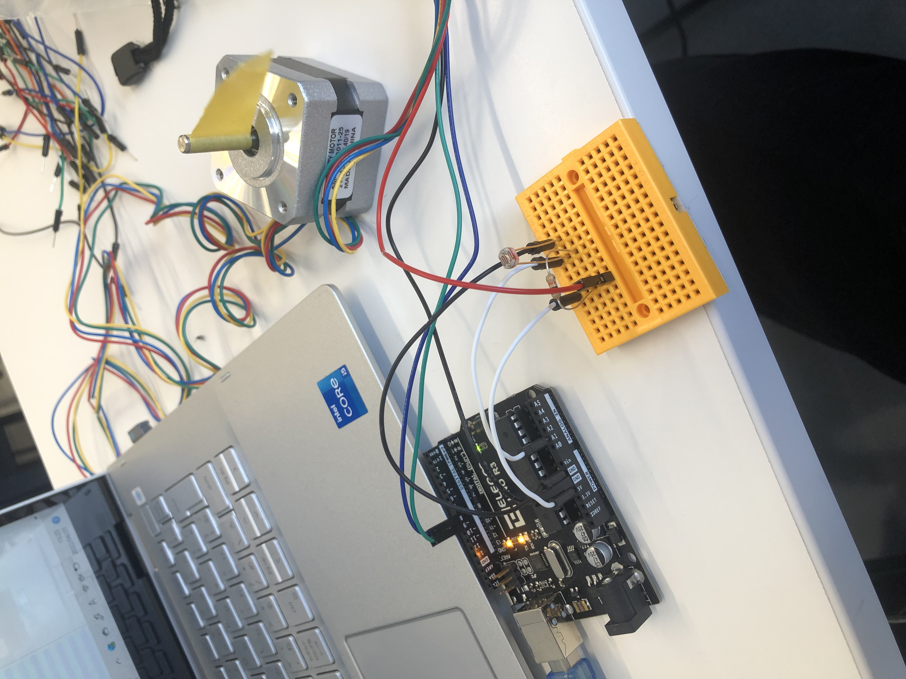
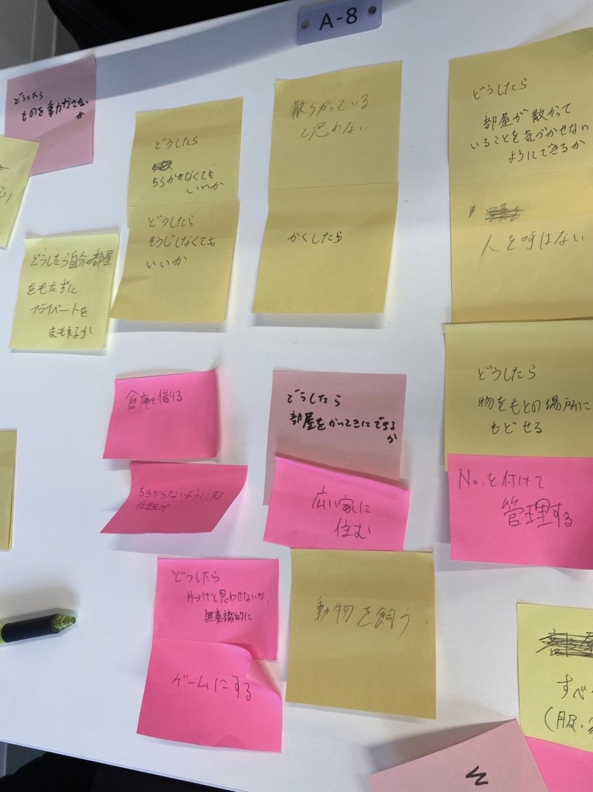
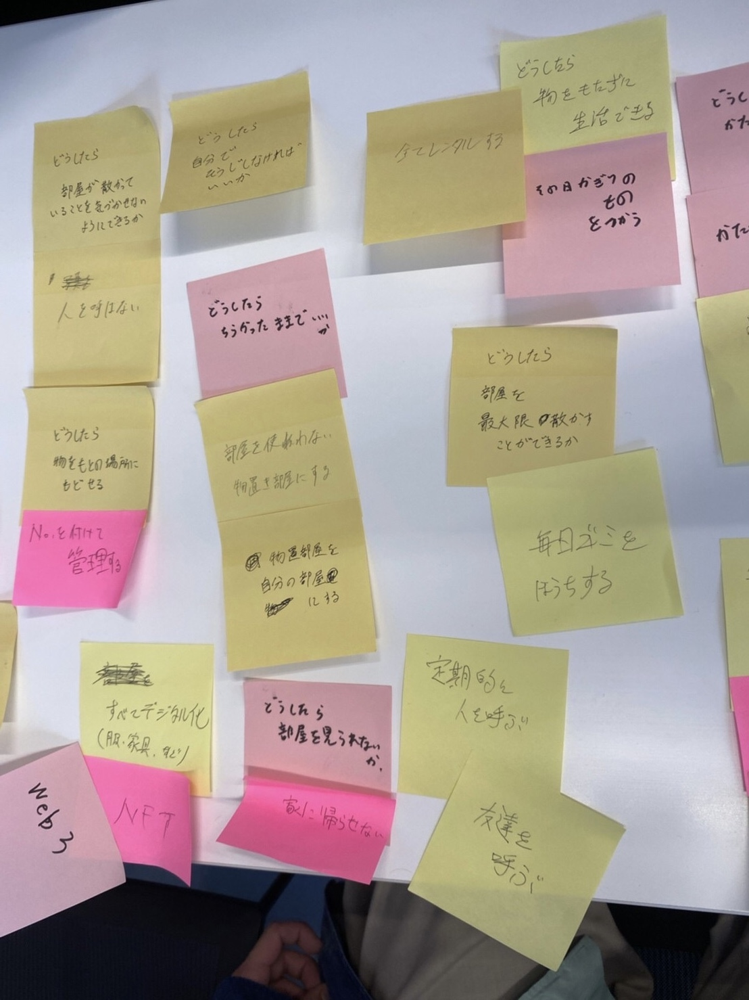
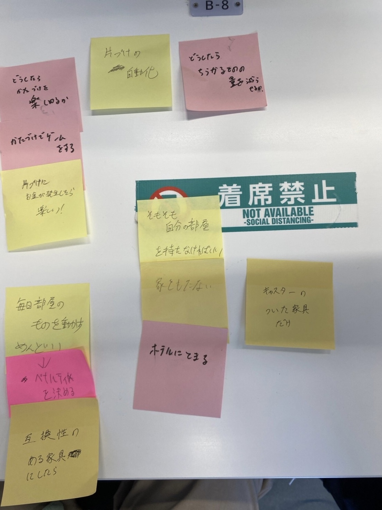

第3回
ステッピングモーターを動かす
コード
- const int DIR = 8;
- const int STEP = 9;
- void setup() {
- pinMode(DIR, OUTPUT);
- pinMode(STEP, OUTPUT);
- digitalWrite(DIR, LOW);
- digitalWrite(STEP, LOW);
- Serial.begin(9600);
- }
- void loop() {
- int val=0;
- val=analogRead(1);
- Serial.println(val);
- if(val<200){
- clockwise(600);
- }else{
- counter_clockwise(600);
- }
- }
- void clockwise(int delaytime){
- digitalWrite(DIR, HIGH);//HIGHは時計回り
- digitalWrite(STEP, HIGH);
- delayMicroseconds(delaytime);
- digitalWrite(STEP, LOW);
- delayMicroseconds(delaytime);
- }
- void counter_clockwise(int delaytime){
- digitalWrite(DIR, LOW);//はLOWは反時計回り
- digitalWrite(STEP, HIGH);
- delayMicroseconds(delaytime);
- digitalWrite(STEP, LOW);
- delayMicroseconds(delaytime);
- }
ディレイタイム5000のやつは回るスピード

課題2
グループワーク
HMW (How might we)： 私たちがどうしたらいいかを付け加えて考える。
Yes and...：「...そうそう、それでね...」って感じで肯定し付け加えて新たな展開を生み出す。



デザイン演習Ⅲ,Ⅳ・トップページ